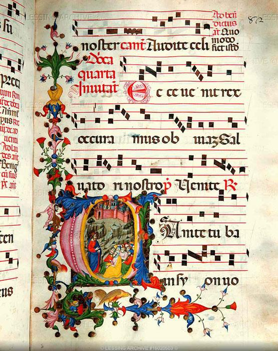
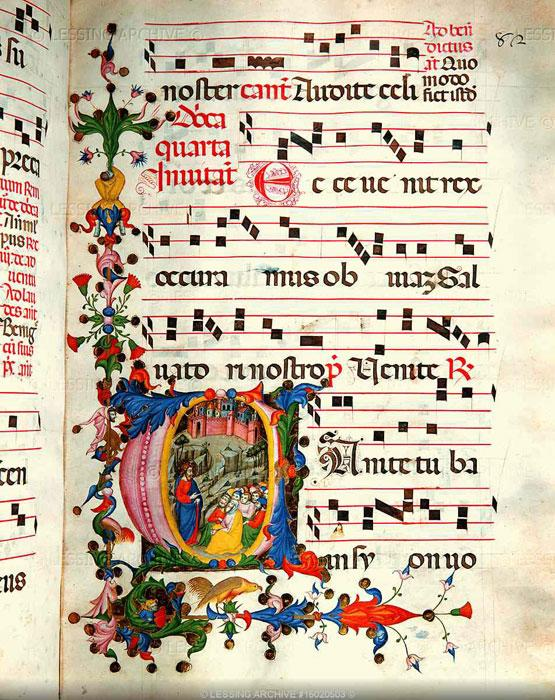

🔎 About This Webpage
Welcome to my project page for Stanford's ENGLISH 57 course, taught by Prof. Elaine Treharne! My name is Ben, and I do apologize if the tone is more Cunk on Earth than university dissertation or Oxford University Press, though I will say in good faith that this is my best effort at encapsulating a wild, fun, out-of-world experience with a subject far outside my comfort zone. That, of course, is medieval manuscripts, the subject matter of a 3-unit class I took in the first quarter of my CS master's program.
 

What was I doing in a medieval manuscripts seminar as a literature novice? My MS advisor was definitely curious, a little puzzled, though very supportive. What did I learn? About manuscripts, medieval history, the origin and history of the book, the genesis of the printed page, the materiality and unifying valence of textual objects, calligraphy on fine calfskin and vellum paper, and being academically out-of-shape in a class while still enjoying the experience that is learning. And ultimately, what I am going to do next? What does this mean for my life and my learning? What's the next Saturn ring on my way to unlocking the mysteries of the univers—ity's special medieval archives, where book covers, when unlatched and opened, become trapdoors into ancient worlds that are as storied, relevant, and painstakingly complex and untame as any era in history, as imagination.
Here, I aim to answer these questions, or at the very least reflect on and talk about them. On the sidebar, you'll find the individual sections this webpage is parcelled into—from my day in the Green Library Special Collections, to my in-class experiences in a windowless attic room in Margaret Jacks Hall, to reflections on perusing manuscripts, historical artifacts, and visiting museums during the quarto of my senior year I spent abroad in the United Kingdom, to why I continue to study and love studying English literature. And why it matters for me.
As a disclaimer, I digress a lot, actually prolifically, though after nine Creative Writing classes (and twelve English ones total), I've accepted this is just how I write and share knowledge. This is who I am. I never make it easy for myself, though really none of us do. For better or for worse, we humans resist the linearity, the straightforwardness of time, and of our mortality. It's never a direct line, but a great circle, a celestial arc. We strive for greatness. For permanence. Like a photograph, a book with our name printed on it, or an ancient manuscript with holiday-card-style pictures, we want to leave something behind that will be remembered, something unique, mysterious, cherished.
At the moment, my writing is very much stuck in that pursuit. The prose, in its strain to be distinctive, brilliant, revises and curates itself into non-existence. I've likened it at times to a dead beetle trapped in an oval of shiny, stultifying, killing amber, though I'm hoping to break out of that mold, that cell of perfectionism by the time I apply to MFA Programs (Creative Writing). I haven't broken out of that mold yet, but with each ugly word and uglier sentence I manage to put on a page here and elsewhere, I can see the amber breaking, spidering with cracks, the light shining through the ruin.
So thank you for reading, and enjoy! If you are astonished by this execrable, tattered, wet papier-mache mess before your eyes, and wonder why I have submitted it in the first place, then I will have done my job.
| 🎨 Why English (57)? | 📜 On Manuscripts |
| 📚 Special Collections Day | 🍃 Memory Leaves |
| 🔮 What's Next?
(Teaching, Literature, MFAs?) |
🌐 Website Source Code
(Minimal JavaScript, Tailwind CSS) |